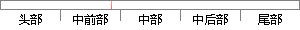

要进行串口的通信，首先需要设置开发板的串口信息，比如串口波特率，数据位，停止位，校验位等。
片段位置图

相似结果
相似片段：两种不同格式比如不同波特率的串口也要相互通信,这就必须进行串口波特率等格式的...串口B,分别设置为不同的波特率、不同的校验位、不同的数据位和不同的停止位...
| 标题 | 《串口波特率转换的纯软件实现 - IT国内新闻\IT资讯\新闻 — C114(...》 |
| 对比库 | PaperRater云论文库 |
| 网址 | http://www.c114.net/news/212/a674534.html |
| 相似率 | 73.53% （轻度抄袭） |
※ 片段修改建议 ※
近似词参考：- 进行：举行
- 比如：好比 譬如
- 停止：遏制 截止 截至 休止 中断 终了 终止 住手 制止
- 需要：必要
- 首先：起首
- 通信：通讯
系统自动生成语句：要举行串口的通讯，起首必要设置开发板的串口信息，好比串口波特率，数据位，遏制位，校验位等。
注：本片段修改建议为系统自动生成，仅供参考。